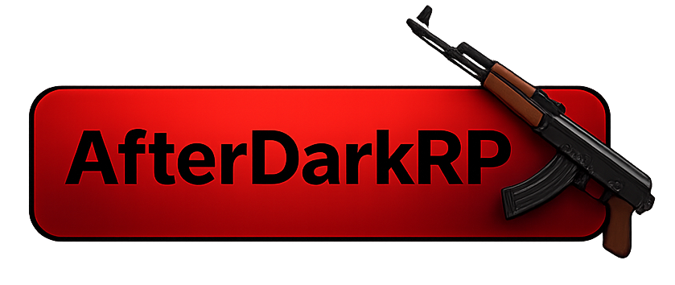

Nightshift's DarkRP for
Server Summary
AfterDarkRP is Nightshift's custom DarkRP stack for s&box, focused on structured roleplay loops, a server-authoritative economy, and readable in-game systems.
Build source: internal development branch.
Current Focus
Core Systems
- Wallet, bank persistence, payday cadence, and payment history are active.
- Police and justice flow supports taze, detain/arrest, and prison timing.
- Crime status and fines are accessible through in-world terminal interactions.
Economy and Entities
- Door ownership/sign logic supports single, sliding, and double doors.
- Money printer and weapon shipment loops are wired and actively tuned.
- Pocket inventory and loadout routing include `ns_fists` default setup.
Role Progression
- Civil, Government, and Criminal catalogs are populated with salary balancing.
- Mayor and SWAT paths use vote-gated progression.
- Gang roles and mugger loaded-wallet gameplay are active.
Detailed Notes
- Full milestone detail moved to the Devlog page.
- Patch-by-patch history remains in Changelog archive.
- Use Guide for controls and Rules for policy baseline.
For exact implementation details, open Devlog.